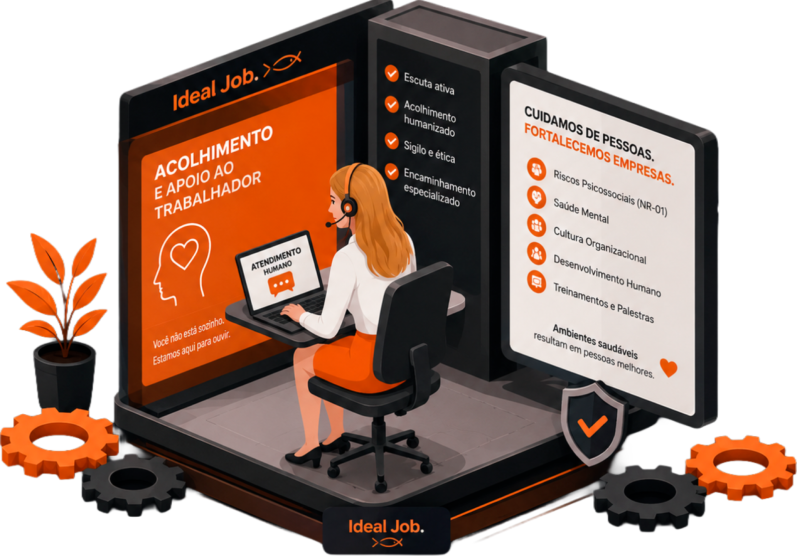
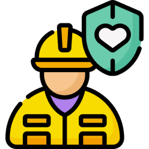

A Ideal Job vai além das exigências legais: cuida da alta liderança e transforma cultura em performance.
Sobre

Quem somos
A Ideal Job atua na área de Segurança e Saúde no Trabalho, oferecendo soluções voltadas à prevenção de riscos e à promoção de ambientes de trabalho mais seguros e saudáveis.
-

Segurança
no Trabalho -
Saúde Mental
no Trabalho
Diferenciais
Cuidar do trabalhador é essencial. Mas cuidar do dono e da liderança é estratégico.
Cuidamos de quem cuida: apoiamos o gestor na construção de um ambiente emocionalmente saudável.
Criamos cultura organizacional positiva, fortalecendo o propósito e o engajamento da equipe.
Aumentamos o desempenho individual e coletivo, resultando em maior satisfação.
O que é a NR-1?
A Norma Regulamentadora nº 1 estabelece diretrizes gerais de Segurança e Saúde no Trabalho (SST), orientando as empresas na identificação, avaliação e prevenção de riscos presentes no ambiente de trabalho.
Identificação de riscos
Identificação dos perigos e riscos que podem afetar a segurança e a saúde dos trabalhadores.
Gerenciamento de riscos
Adoção de medidas para prevenir, controlar e reduzir os riscos ocupacionais.
Gestão de SST
Organização das ações de Segurança e Saúde no Trabalho para manter um ambiente mais seguro.
Cuidar da saúde mental também é cuidar do trabalho
Prevenção de Riscos Psicossociais
Identifique fatores que afetam o bem-estar e a rotina dos colaboradores.

Acolhimento e Escuta Ativa
Criação de canais de suporte e programas de acompanhamento psicológico para promover o bem-estar contínuo dos colaboradores.

Cultura e Liderança Saudável
Treinamento de equipes e gestores para construir ambientes de trabalho seguros, inclusivos e livres de assédio.